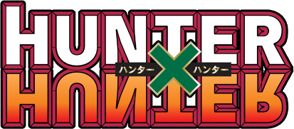
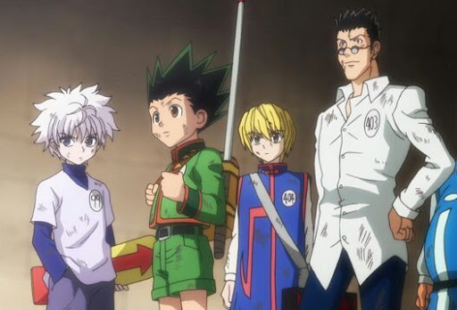
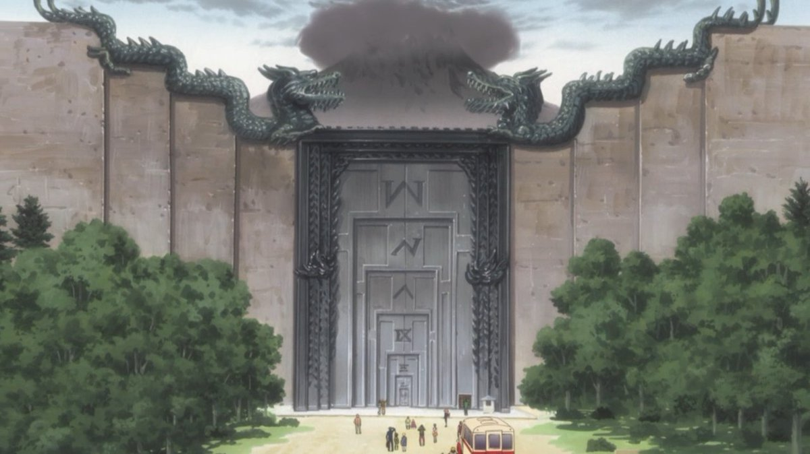
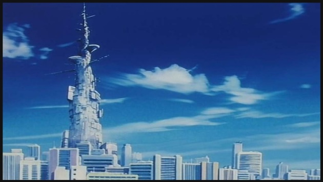

|
 HUNTER X HUNTERハンターハンターSommaire- Qu'est-ce que Hunter x Hunter - Arc Examen Hunter - Arc Famille Zoldik - Arc Tour Céleste - Les Personnages Principaux - Regarder les premiers épisodesQu'est-ce que Hunter x Hunterハンター×ハンターとは？Hunter × Hunter (ハンターハンター, Hantā Hantā?) est un shōnen manga écrit et dessiné par Yoshihiro Togashi. Il est pré-publié depuis mars 1998 dans l'hebdomadaire Weekly Shōnen Jump de l'éditeur Shūeisha, et a été compilé en trente-six tomes au 4 octobre 2018. En mai 2013, le manga s'est vendu à plus de 65 millions d'exemplaires au Japon. La version française est publiée aux éditions Kana, avec trente-six tomes sont sortis au 3 mai 2019. La série a fait l'objet de deux adaptations en anime. La première, produite par Nippon Animation, est diffusée entre 1999 et 2001 au Japon, suivie de trois séries d'OAV sorties en 2002, 2003 et 2004. Elle a été éditée en français par Dybex. La seconde, produite par Madhouse et reprenant l'histoire depuis le début, est diffusée entre octobre 2011 et septembre 2014 au Japon. La licence pour les principaux pays francophones a été acquise par Kana Home Video pour une sortie en DVD. La série est également adaptée en deux films d'animation sortis au Japon, Hunter × Hunter: Phantom Rouge le 12 janvier 2013 et Hunter × Hunter: The Last Mission le 27 décembre 2013. Retour au sommaire  Arc Examen Hunterハンターのトライアルボウ
L'examen de Hunter se déroule une fois par an. Pour y participer, il faut tout d'abord s'inscrire puis réussir à parvenir sur le lieu de l'épreuve, tenu secret. Pour cela, il faut trouver les navigateurs qui permettent d'y aller. Tout le trajet est une épreuve, permettant de juger les participants qui veulent obtenir le titre de Hunter.
Gon, Kurapika et Leolio se retrouvent tous trois sur le même bateau, se rendant vers l'épreuve. En chemin, ceux-ci sont pris dans une tempête. Étant les trois seuls passagers n'ayant pas eu peur pendant la tempête et ayant gardé leur sang-froid, le capitaine les accepte pour la première épreuve non-officielle de l'examen de Hunter et leur indique le premier endroit où se rendre pour pouvoir aller sur le lieu de l'examen, l'arbre sur la montagne.
Le groupe arrive finalement sur le lieu des épreuves, où ils sont accueillis par une « horde » de participants. Ceux-ci n'ont rien à voir avec des personnes ordinaires, ce sont tous, selon Kurapika, des experts.
Alors qu'ils vont commencer la première épreuve, ils font entre-temps la rencontre de Tompa qui essaie en vain de les éliminer en leur faisant avaler un laxatif. Ils feront aussi la rencontre de Kirua, l'un des principaux personnages du manga.
L'examinateur de la première épreuve est Satotsu, un Hunter Archéologue. L'épreuve qu'il impose est de faire courir les 404 participants pendant plus de 80 kilomètres et de les amener dans un marécage, Le Nid des Escrocs. Toutefois, Satotsu ne manquera pas d'augmenter la cadence en cours de route. Le Nid des Escrocs est parsemé d'emûches et de monstres (notamment : le Ségamé, ou Homme de Brume, le Patient-Attentif, le Corbeau Crieur, le Champignon Mine et le Papillon Somnifère). Gon, Kirua, Kurapika ainsi que Leolio sortiront vainqueurs cette épreuve pour aboutir au second tour des épreuves. On dénombre, pour ce tour, 47 abandons.
La deuxième épreuve consiste à combler la faim de Buhara et Menchi, examinateurs et Hunters Gourmets de cette épreuve. Il y a deux sous-épreuves lors du deuxième tour, dont la première, où les participants doivent assouvir la faim de Buhara qui commande un Great Stamp, le porc le plus féroce de la planète. Le groupe sortira vainqueur de cette sous-épreuve, et il restera 70 participants pour la deuxième sous-épreuve.
Devant l'échec des participants de l'examen en entier, Netero, le Président de la société des Hunters, décide d'intervenir en personne sur les lieux des épreuves. Il sermonne Menchi, et lui demande de choisir une nouvelle épreuve, tout en sachant qu'elle devra elle aussi s'y soumettre. Menchi demande au président d'amener (avec le dirigeable de la fondation) les candidats au sommet du mont Mafutatsu, que l'on devine à l'horizon, pour que les candidats récupèrent un œuf dur. Arrivés au sommet, Menchi plonge dans le canyon coupant la montagne en deux, pendant que Netero explique l'épreuve : les aigles-tarentules vivent exclusivement sur cette montagne, tissent des fils de part et d'autre de la faille, et y suspendent leurs nids. Pour récolter l'un de ces œufs, il faut sauter, s'accrocher à un fil, ramasser un œuf dans un nid, et remonter en escaladant la paroi.
Les candidats sont déposés au sommet de la tour aux astuces et reçoivent pour toute indication « d'atteindre le pied de la tour en moins de 72 heures ». L'un des candidats tente de descendre le mur de la tour à mains nues, mais des prédateurs volants surgissent et le dévorent. Les candidats doivent se glisser dans une des nombreuses entrées cachées et affronter les pièges variés disposés sur leur chemin. Gon tombe dans le chemin du « choix à la majorité » avec ses amis Leolio, Kurapika et Kirua, ainsi que Tompa. Ils atteindront le pied de la tour au cours des dernières secondes de l'épreuve.
C'est une épreuve qui n'existe que dans l'animé. Lors des épisodes 18 à 20, les candidats sont déposés sur un navire-hôtel ancré dans un cimetière de bateaux, soi-disant pour se reposer. En réalité, ils doivent y passer plusieurs tests, comme trouver des trésors de valeur ou survivre à un redoutable phénomène climatique qui ne se produit que tous les dix ans. Pour échapper au typhon qui va submerger l'île, les candidats survivants doivent s'unir pour remettre en marche le cuirassé servant d'hôtel. Grâce à l'efficacité de Gon, Kirua et Leolio et l'organisation de Kurapika, 24 personnes passent l'épreuve, se remettant ainsi à niveau avec le manga.
Les candidats sont déposés sur l'île de Zébil, avec l'instruction de totaliser 6 points pour passer à l'épreuve suivante. Ils gagneront ces points en conservant leur plaque numérale (3 points), en s'emparant de celle de leur cible (3 points) ou en accumulant les plaques des autres concurrents (1 point). Lors du tirage au sort des cibles, Gon tombe sur le n°44, celui d'Hisoka. Grâce à une stratégie longuement préparée, il arrivera à s'emparer de la plaque d'Hisoka, mais se fera simultanément neutraliser par le candidat dont il était la cible. Il ne devra sa qualification qu'au bon vouloir d'Hisoka qui lui prêtera sa plaque pour le récompenser de ses efforts. Neuf personnes seulement passeront l'épreuve.
Le président Netero décide d'organiser une sorte de tournoi. Il suffit aux candidats de faire déclarer l'abandon à leur adversaire pour être admis comme Hunter, alors que le perdant continue le tournoi. La mort d'un adversaire entraînerait la disqualification du meurtrier. Gon et Kurapika sont les premiers qualifiés. Kirua se retrouve lors de son combat opposé à son frère aîné. Sous la pression de ce dernier, il déclare forfait, et quelques minutes plus tard, pour une raison toujours inexpliquée, tue Bodoro, un des candidats. Il est immédiatement disqualifié et l'épreuve est clôturée. Kirua part tout de suite après son meurtre. Les Hunters promus de cette session sont :
Gon Freecss ;Kurapika ;Hanzo ;Hisoka ;Pokkuru ;Leolio Paradinaito ;Irumi Zoldik.
Gon, Kurapika et Leolio décident alors d'aller « sauver » Kirua, et c'est ainsi que cet arc se clôt.
 Arc Famille Zoldikゾルディック家のアーチ
À la suite de l'examen et à son « échec » dans le cinquième tome, Kirua retourne dans sa famille, constituée de tueurs professionnels, les Zoldik, et semble se murer dans une vie pénible dont il a du mal à se défaire. Kurapika, Leolio et Gon se rendent chez lui pour le délivrer de cet univers, mais aussi de lui-même. Cependant, lorsqu'ils arrivent à la demeure des Zoldik, ils doivent passer le test de la porte, le but étant de pousser une porte dont chaque bloc pèse 2 tonnes. C'est grâce à un gardien et à leur amitié avec Kirua qu'ils vont pouvoir emprunter cette porte secrète seulement connue de la famille et des domestiques. C'est au bout de deux semaines, lorsque Leolio arrive à bout des 4 tonnes, que le groupe peut enfin passer. Après avoir marché, Gon, Kurapika et Leolio se retrouvent face à Kanaria, apprentie domestique qui ne les laisse pas traverser le portail. À chaque tentative, Leolio Kurapika et surtout Gon se font expulser par la jeune fille. On apprend que Kirua traite ses domestiques en amis et ne comprend pas les statuts des personnes. Gon réussit à passer grâce à sa détermination et à son amitié pour Kirua. Est ensuite décrit l'état dans lequel se trouve Kirua, victime de torture. Malgré tout, il garde une force incroyable face à son bourreau, qui n'est autre que son frère aîné, bien moins fort que lui. La mère de Kirua intervient ensuite et ment habilement à Gon sur la situation de Kirua. Kanaria décide de mener Gon Kurapika et Leolio à la résidence des majordomes. Ceux-ci rencontrent Goto, le chef des majordomes, qui décide de les faire patienter en jouant, l'enjeu étant la vie de Kanaria. Gon finit par gagner la partie et découvre avec stupeur que ce n'était qu'un moyen pour patienter en attendant le retour de Kirua. Pendant ce temps, Kirua, qui a eu la permission de son père et de son grand-père, est en route pour la résidence. Il arrive au moment où Gon gagne, et retrouve ainsi Gon, Kurapika et Leolio. Kirua décide ensuite de partir et menace Goto de ne pas le suivre.
Sa famille semble divisée sur l'éducation de Kirua. Sa mère tient à le garder au domaine et lui faire suivre une formation très rigoureuse, mais son père Silva et son grand-père Zeno pensent différemment. Finalement, Silva décide d'autoriser Kirua à quitter le domaine, à condition de rester avec ses amis et de ne jamais les trahir.
Gon et Kirua se mettent donc en route vers la tour du tournoi céleste afin d'y acquérir de l'argent.
 Arc Tour Célesteセレスティアルタワーアーク
Gon et Kirua réunis, les deux enfants se rendent à la tour du tournoi céleste. Dans cette tour immense de 991 mètres de haut, s'affrontent des combattants venus du monde entier. Cette tour leur permet non seulement de s'entraîner au combat, mais aussi de gagner de l'argent. En effet, après chaque victoire, on gagne le droit de monter d'un certain nombre d'étages, et une somme plus ou moins importante selon l'étage. Le combat n'a pas de règles, à part l'interdiction des armes. Il s'arrête au KO, ou lorsqu'un des concurrents totalise 10 points. Les points se comptent ainsi : les « Clean hits », coups ordinaires, valent 1 point ; les « Criticals hits », coups extraordinaires comptent pour 2 points ; et on ajoute 1 point quand il y a « Down », c'est-à-dire qu'un combattant est à terre.
Cependant se dresse devant Gon et Kirua la frontière symbolique du 200ème étage. À partir de celui-ci, les règles changent. Les armes sont autorisées, et l'on doit remporter 10 victoires avant de totaliser 4 défaites pour pouvoir défier le « Floor master ». Désormais ils combattent seulement pour l'honneur, car il n'y a plus aucune récompense. Mais, élément connu des seuls initiés, à partir du 200ème étage les combattants utilisent le Nen.
Aidés par Wing, le maître de Zushi, un autre enfant rencontré dans la tour, Gon et Kirua apprennent les bases du Nen. Après avoir perdu son 1er duel contre Guido, malgré l'interdiction de Wing de combattre, Gon et Kirua vont petit à petit développer leur Ren.
C'est aussi dans la Tour céleste que Gon se bat contre Hisoka pour la première fois, et qu'il parvient même à lui placer son « poing dans la figure », lui permettant ainsi de rembourser sa « dette » de l'Examen Hunter en rendant à Hisoka sa plaque.
Les Personnages Principauxメインキャラクター
Retour au sommaire
Regarder les premiers épisodesハンター×ハンターの最初のエピソードを見る
Mon deuxième site classant les meilleurs animés du monde ? |